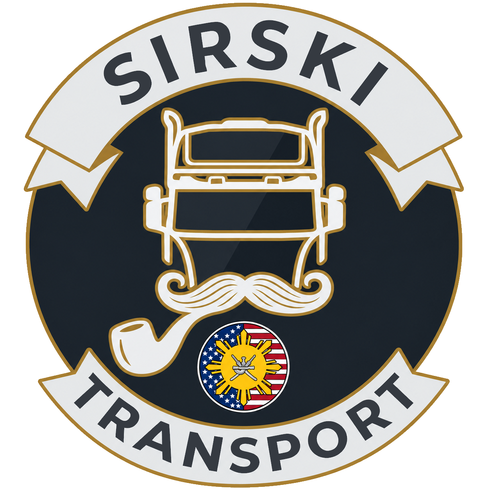

EUROPEEUROPEAN
EUROPEAN
HAULAGE
Cross-border deliveries, scenic routes and TruckersMP convoys throughout the ETS2 world.

SIRSKI TRANSPORTTRUCKERSMP • VIRTUAL TRUCKING COMPANY
Built on Trust.
Welcome to Sirski Transport — a professional, friendly and ambitious VTC bringing drivers together across Europe and the United States.
Sirski Transport is built around one simple idea: trucking is better when you have the right people beside you.
We combine organised virtual trucking with a relaxed and respectful community. From European hauls to American routes, from casual deliveries to weekly multiplayer convoys, every kilometre is part of the journey.
Wherever the road takes us, Sirski Transport keeps moving. Our VTC embraces both European and American trucking experiences.
Cross-border deliveries, scenic routes and TruckersMP convoys throughout the ETS2 world.
Long-haul American trucking, wide-open highways and ATS convoy adventures.
Our regular community convoy runs every Thursday throughout the year. Route and meeting details are announced in Discord.
Every Thursday • All year round • TruckersMP / community routes
Check Discord for the weekly route, server, departure time and meeting point.
04 — RECRUITMENT
Looking for a VTC that values drivers, teamwork and good times on the road? Sirski Transport could be your next home.